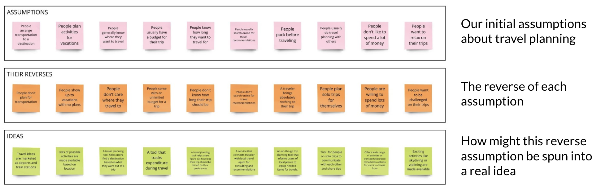
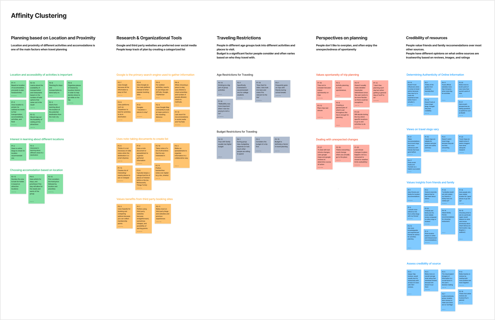
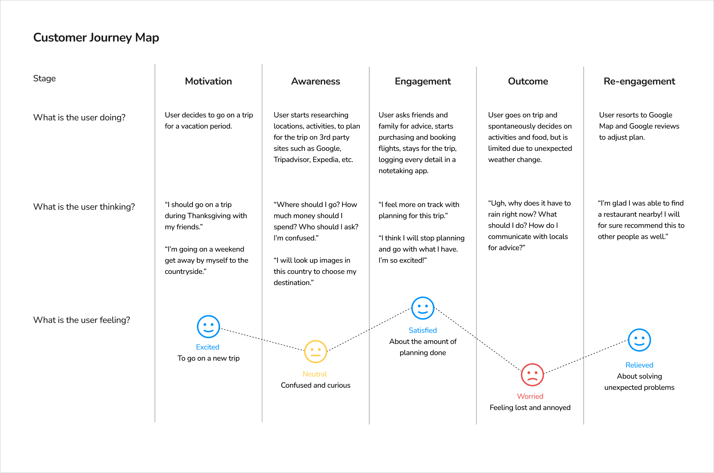
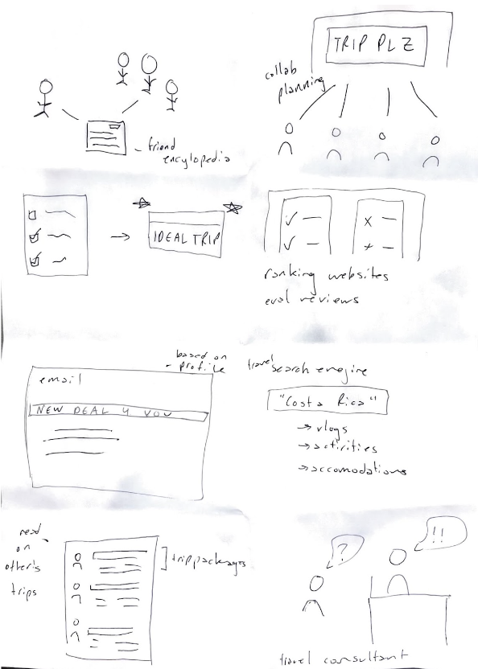
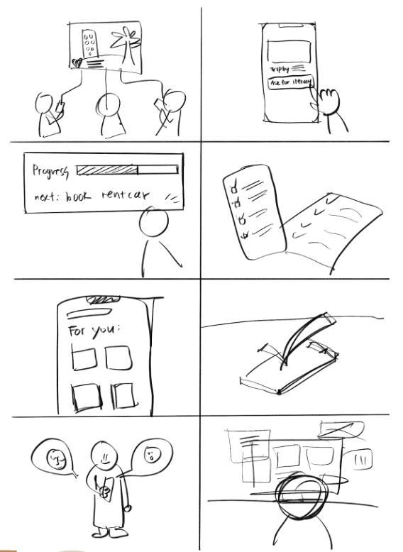
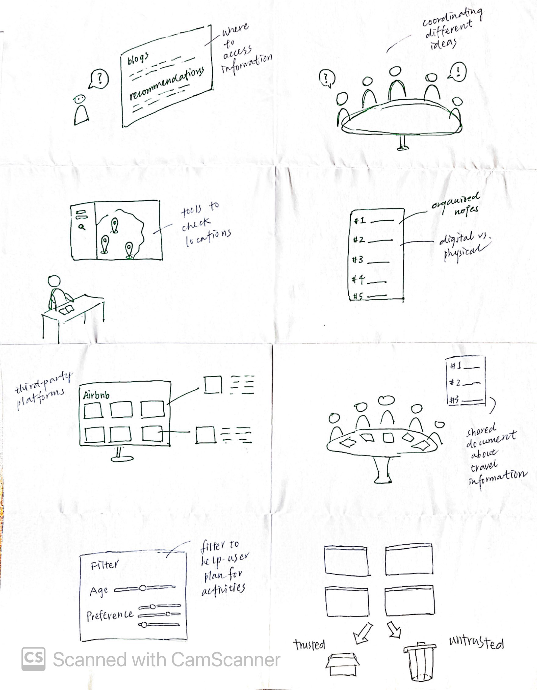
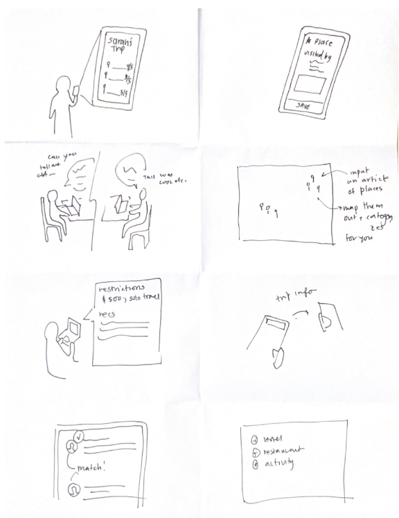
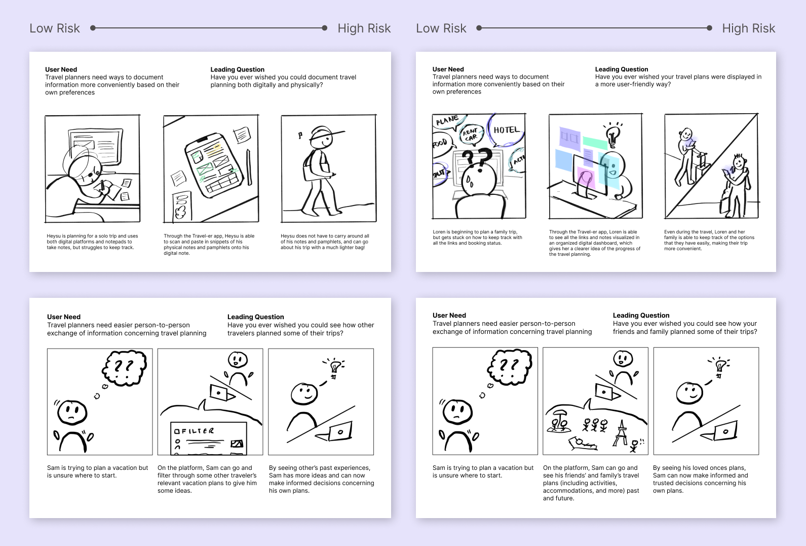
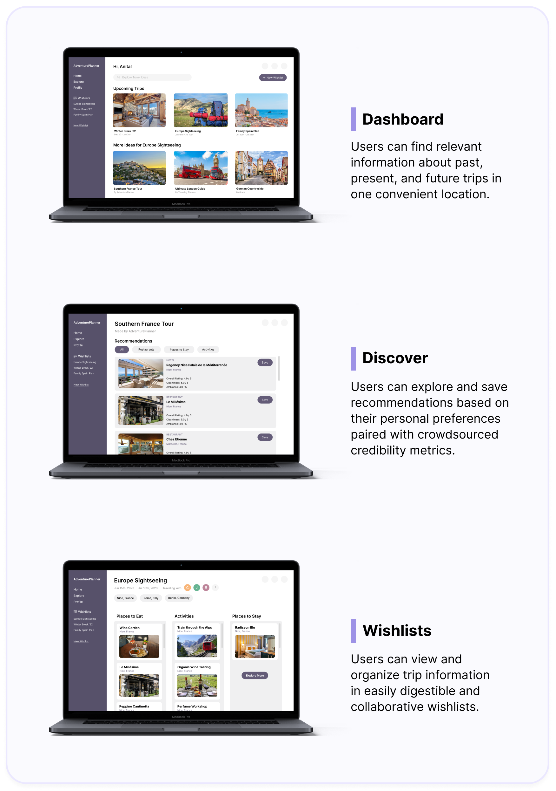

Overview
| Duration | Sep - Dec 2022 (12 weeks) |
|---|---|
| Role | UX Researcher • UX Designer |
| Team | Ria Manathkar • Caroline Pang • Christy Zo • Joanne Tsai |
| Tools | Figma • Miro |
After extensive research in the travel planning industry, we found that the biggest area of opportunity to improve users’ experience was to streamline a recommendation system tailored to their unique needs and preferences. We addressed this by creating a digital platform that enables personalized travel guidance and planning coupled with crowdsourced credibility scores. This creates a flexible incorporation into user’s current planning processes while remaining trustworthy.
Area of Opportunity
Travel planning requires factors such as budgeting, scheduling, and making decisions on stays, food, etc., to be considered. Some problems we identified that most users have are:
- The amount of information available on the internet and different personal preferences in organizing information make the process of travel planning arduous and inefficient.
- The task of having to check multiple sources to see if online information is credible compounds the research time.
Through research, we were able to see that the most trustworthy information was consistent, crowdsourced reviews and ratings when it came to online travel research.
Methods
-
Background Research
We started our research by conducting background research on trip planning, which involved both experiential and informational search. We also visualized and analyzed data using Tableau and Python to gain insights and execute thoughts into a report suggesting methods of research and inferences.
-
Ideate & Define
Reverse Assumptions
We used Miro to map out our various assumptions and their reversals. We generated 10 assumptions and then immediately challenged them. Then we created a list of corresponding ideas that accomplished each reversal. Based on these ideas, we chose our favorite and expanded on it above.
Problem Statement Reframed
-
Contextual Research
We began by drafting a research protocol and consent script to help us understand our guiding questions. Then, after recruiting four eligible participants, we conducted contextual interviews using contextual inquiry. After each interview, each researcher wrote up their interpretation notes and we came together to synthesize our findings in an affinity diagram. 
Our goals for the interviews were to understand how and why the participants make specific decisions when it comes to research and to reveal possible environmental factors affecting their travel preferences. -
Modeling
Empathy Map: defining our target users once again and sythesizing data better

Customer Journey Map: documenting typical travel planning experience

Through affinity diagramming and modeling, we extracted some high-level insights from our findings with supported evidence:
- People trust recommendations from friends and family over most online information.
- People value authenticity and simplicity when travel planning.
- People have very different tendencies when it comes to organizing travel information.
- People have unique limitations when traveling which influence the decisions they make.
- People don’t feel the need to have a strict travel plan due to the ease of digital research.
-
Storyboarding
With these new insights from our contextual research, our next step was to start exploring concepts to reimagine how the future of travel planning may look. We used a combination of storyboarding and speed dating to rapidly prototype and evaluate different potential solutions based on our findings.
To generate ideas for storyboards, we practiced the activity Walking the Wall, where we reviewed all previous research and drew connections between the results, and played Crazy 8s, a brainstorm session on user's needs and potential solutions.Crazy 8s
Storyboards
After discussing the Crazy 8s ideas, we came up with 12 storyboards with different level of risks (how likely a user would accept the proposed solution). I have highlighted some of them here:
 -
Speed Dating
We interviewed 4 participants in speed-dating sessions to understand limitations and outstanding needs in the travel planning process.
Overall Findings
- People want agency in deciding the credibility of a source. Having transparent calculations of credibility is important for user to fully evaluate a source.
- People appreciate personalized recommendations and suggestions that are curated based on their preferences and past experiences.
- People want flexibility and intuition when documenting travel planning resources, something easy to use and can display various types of media/info.
- People trust their friends and family the most, but don’t want an influx of information about their travel plans because of privacy and relevancy.
Common Misunderstandings
- We assumed that people would be willing to rely on computer algorithms to save time or narrow down options when planning for travel.
- We assumed that people would trust travel information gained from family and friends more than those from strangers.
- We assumed that including demographic information, such as age, of people who provided feedback to an online travel source would help users determine if the source is useful to them.
User Validated Insights & Ideas
- People want credible, personalized recommendations — those from family and friends or generated using technology are favorable because they reduce the amount of research needed.
- People need ways to conveniently organize travel information. Participants demonstrated interest in a visual dashboard to organize and store multiple forms of travel information.
- Verification of online travel information is important. People have a high barrier for trusting information shared by others online, and are willing to put in extra research effort to verify this information.
New Design Ideas
- A plugin that suggests more relevant information about user’s current search to help them validate the authenticity of information they are looking for.
- An AI platform that provides personalized, collaborative travel recommendations in various appropriate media form, by providing images, videos, reviews, etc. into the platform.
- A documenting app where the system predicts the type of information the user is trying to log, and suggest a more efficient format that would automatically convert the information.
-
Survey Studies
Using what we have learned, we defined our target users to be young adults between ages 22-26. We then created and conducted a survey study on eight individuals from our target user group, and synthesized the results to learn about:
- How does budget restriction affect young adults when travel planning?
- What kinds of groups do young adults tend to travel in?
- How do young adults utilize digital tools to plan for trips and document travel information?
- What types of information sources do people use and trust when travel planning?
-
Click-through Prototyping
Based on our findings and insights from earlier research, we created low-fidelity prototypes for our travel planning and organization platform.
We conducted interviews consisted of 8 participants interacting with our prototype and answering questions based on the TAM (Technology Acceptance Model) questionnaire, which helped us test our assumptions and quantitatively measure the honest signals we were most interested in as each question was answered with a scale.
Insights + Evidence
Solution
Our solution combines the biggest user needs we revealed through our research process: trustworthy recommendations and flexible organization. Our platform uses a machine learning algorithm to present individualized recommendations based on a user’s interests and past activity. Moreover, each recommendation is coupled with crowdsourced credibility scores in several categories such as sanitation or value. Users are then able to navigate through such recommendations and organize relevant finds in personal wishlists. We believe our solution will seamlessly integrate into current planning processes, and streamline the research process for millions of users :)
